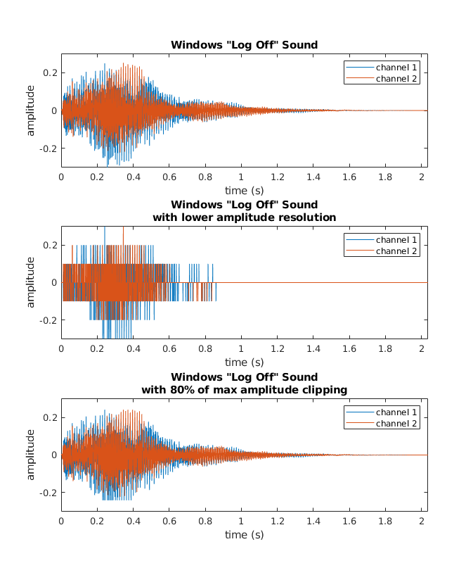
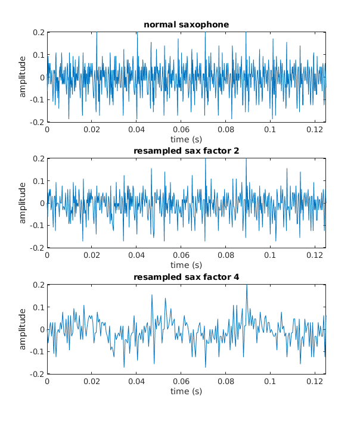
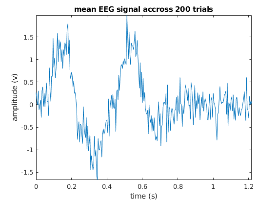

[logoff_sound,sampleRate] = audioread('logoff.wav'); high = max(abs(logoff_sound), [], 'all'); %sound(logoff_sound, sampleRate); duration = (length(logoff_sound) - 1)*1/sampleRate; t = 0:1/sampleRate: duration; subplot(3,1,1); plot(t, logoff_sound); xlim([0 duration]); ylim([-1*high high]); title('Windows "Log Off" Sound'); legend('channel 1', 'channel 2'); xlabel('time (s)'); ylabel('amplitude'); lowampres = round(logoff_sound * 10)/10; subplot(3,1,2); plot(t, lowampres); title([{'Windows "Log Off" Sound'},{'with lower amplitude resolution'}]); xlim([0 duration]); ylim([-1*high high]); legend('channel 1', 'channel 2'); xlabel('time (s)'); ylabel('amplitude'); % the amplitude seems to be using only 7 values (6 steps) %sound(lowampres, sampleRate); lowerampres = round(lowampres * 10)/10; %sound(lowerampres, sampleRate); % during the first downscaling of the resolution the amplitudes were % assigned to their closest value (and it had only 7 values) which means a % lot of sounds were assigned to a value higher than their original one % during the rounding. Now those already higher values are amplified again % which produces an even louder soundwave (larger amplitudes). A_max = max(abs(logoff_sound), [], 'all'); clipped_sound = logoff_sound; clip_factor = 0.8; clipped_sound(clipped_sound> clip_factor*A_max) = clip_factor*A_max; clipped_sound(clipped_sound< -1*clip_factor*A_max) = -1*clip_factor*A_max; subplot(3,1,3); plot(t, clipped_sound); title([{'Windows "Log Off" Sound'},{'with 80% of max amplitude clipping'}]); xlim([0 duration]); ylim([-1*high high]); legend('channel 1', 'channel 2'); xlabel('time (s)'); ylabel('amplitude'); %saveas(gcf,'windows_logoff.png'); %sound(clipped_sound, sampleRate); % at 80% I personally can't hear the difference but plotting the sound % makes it obvious that the sound never goes beyond a particular amplitude % as we lower the amplitude the sound gets quiter, which makes sense since % we've decreased the amplitude which is effectively the loudness
[sax, Fs] = audioread('Saxophone.wav'); % the shape of sax is 70000;1 so it is a mono recording % the sampling frequency is 8000hz (8khz) % nyquist frequency of this clip = 8000/2 = 4000hz (4khz) % sound(sax, Fs) nyq_sax = sax(1:2:length(sax)); nyq_Fs = Fs/2; % sampling frequency is now 4000hz %sound(nyq_sax,nyq_Fs); % the sound is muffled q_sax = sax(1:4:length(sax)); q_Fs = Fs/4; % sampling frequency is now 2000hz % sound(q_sax, q_Fs); % the sound is even more muffled and particular segments sound like a % vibration/rattling rather than a tone section = sax(24000:25000); section2 = nyq_sax(24000/2:25000/2); section4 = q_sax(24000/4:25000/4); ts = 0:1/Fs:(length(section) - 1) *1/Fs; ts2 = 0:1/(Fs/2):(length(section2) - 1)*1/(Fs/2) ; ts4 = 0:1/(Fs/4):(length(section4) - 1)*1/(Fs/4) ; high = max(abs(section)); high2 = max(abs(section2)); high4 = max(abs(section4)); subplot(3,1,1); plot(ts, section); title('normal saxophone'); xlim([0 ts(end)]); xlabel('time (s)'); ylabel('amplitude'); ylim([-1*high high]); subplot(3,1,2); plot(ts2, section2); title('resampled sax factor 2'); xlim([0 ts2(end)]); xlabel('time (s)'); ylabel('amplitude'); ylim([-1*high2 high2]); subplot(3,1,3); plot(ts4, section4); title('resampled sax factor 4'); xlim([0 ts4(end)]); xlabel('time (s)'); ylabel('amplitude'); ylim([-1*high4 high4]); saveas(gcf, 'sax_comparison.png'); % we can see that with quarter the original sampling rate a sinusoid is % starting to form where there wasn't one before, which is a sign of % aliasing taking place [newS,newFs] = downsampleSound(sax,Fs,7); % sound(newS, newFs); % with factor 7 it's already hard to tell, with factor 8 it could be % anything
function [newSound, newFs] = downsampleSound(soundMatrix, sampleRate, downsampleFactor) % function [new_sound, newFs] = downsampleSound(soundMatrix, sampleRate, downsampleFactor) % downsamples a sound according to a given factor % takes a: % soundMatrix - matrix of samples comprising the sound % sampleRate - the sample rate of that matrix (integer, samples per second) % resampleFactor - factor by which the sampling will be divided/degraded % and returns: % newSound - the resampled versions of the sound matrix % newFS - the new sampling rate (integer, samples per second) % downSampe(A,B,2) returns newSound, a sound matrix that has half the samples % of A and newFs, the new sampling rate, equal to B/2. newSound = soundMatrix(1:downsampleFactor:length(soundMatrix)); newFs = round(sampleRate/downsampleFactor);
load('EEGdata.mat'); plot(t, EEGdata); xlim([t(1) t(end)]); % there should be an amplitude spike shortly after a stimulus ind_event = find(event==1); % ind_event has length 200 so the stimulus was presented 200 times between = diff(ind_event); % there's different amount of samples between events min_samples = min(between); % the minimum amount of samples between 2 consecutive events is 292 EEGsorted= []; for i=1:200 v = EEGdata(ind_event(i):ind_event(i)+min_samples); EEGsorted = [EEGsorted v]; end EEGmean = mean(EEGsorted, 2); sampleLength = mean(diff(t)); % get the average temporal difference between samples time = 0:sampleLength:sampleLength*(min_samples); plot(time,EEGmean) title('mean EEG signal accross 200 trials') xlabel('time (s)'); xlim([time(1) time(end)]); ylim([min(EEGmean) max(EEGmean)]); ylabel('amplitude (v)'); %saveas(gcf, 'mean_eeg_time.png'); % we can see a positive ERP right before the 50th sample, followed by a % negative potential at around the 80th sample, and another positive % potential at around 130th sample. % after looking at the t vector it seems it's sampling once every 0.0042 % seconds, so after converting to that timeline it seems that the potentials % occur at respectively ~200ms, ~350-400ms and ~550ms which are likely % components P200 (aka P2), N400 and P600 % the latter two are associated with grammatical error/unexpected words % if I recall correctly